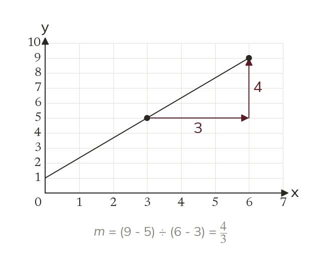
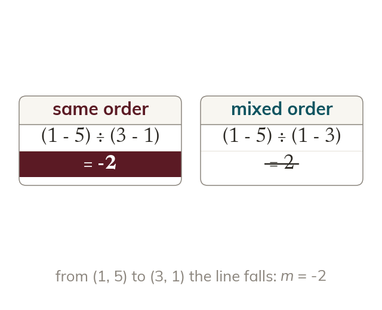
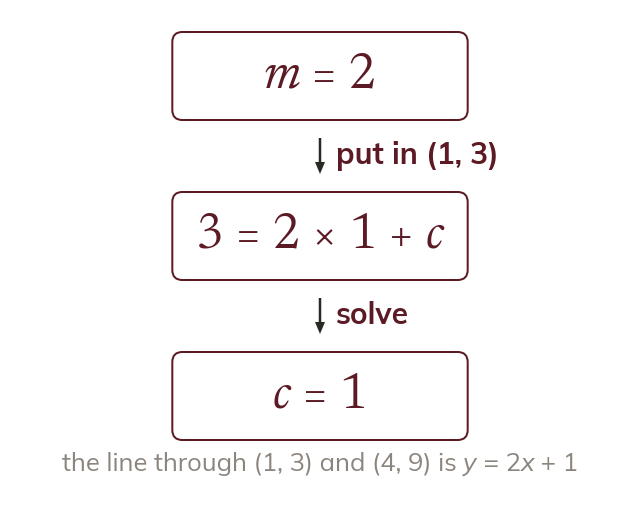
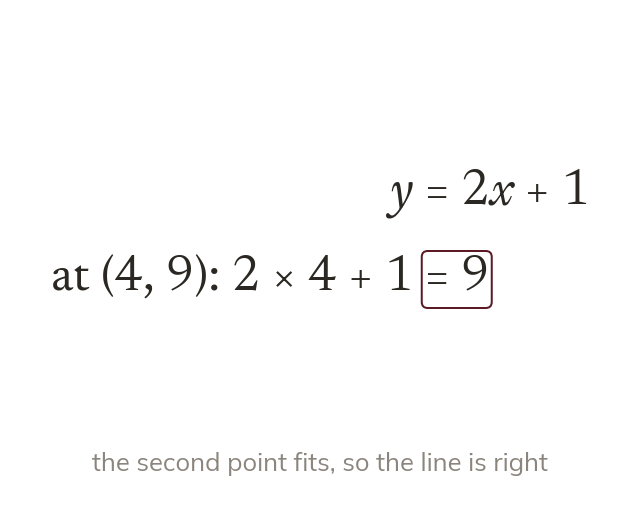

Change in y over change in x
The gradient is the change in y divided by the change in x. Any two points on the line give the same value.
Two readings are often all you have, such as a phone bill in two different months. Two points fix a straight line, so they fix its equation too.
Work down the page at your own pace. Write every answer in your book first, then click to check it.
Read each card, then follow the worked examples one step at a time.

The gradient is the change in y divided by the change in x. Any two points on the line give the same value.

Both changes are taken from the same point to the other. Then the sign of the gradient comes out right.
Pick an answer. If it's wrong, the feedback tells you which mistake it was.
Read each card, then follow the worked examples one step at a time.

Two points give the gradient first. Either point then gives c.

The equation must fit both points. Substituting the second point checks the answer.
Pick an answer. If it's wrong, the feedback tells you which mistake it was.
Finished? Next lesson: 10H.13.4 Parallel Lines.
Log in, then search for a code to practise that skill.
Videos, worksheets and more on each part of this lesson.